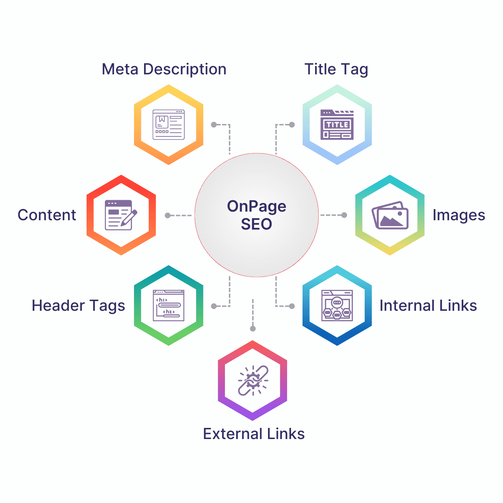
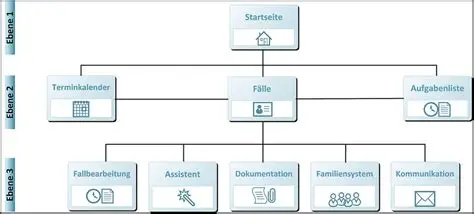

Methodik der Optimierung
Onpage- und Offpage-Strategien zur Maximierung der digitalen Autorität.
Onpage-Optimierung: Relevanz-Basis
Im Jahr 2026 steht Onpage-Exzellenz an erster Stelle. Ohne ein technisch sauberes Fundament werden Inhalte von KIs ignoriert.
- Answer Block Taktik: Platzierung von präzisen, 40-60 Wörter umfassenden Zusammenfassungen am Anfang von Sektionen. Dies steigert die Wahrscheinlichkeit einer KI-Zitierung um bis zu 40 %.
- Chunk-Ready Content: Strukturierung von Inhalten in logische, maschinenlesbare Segmente, damit LLMs die Informationen effizient extrahieren können.
- Core Web Vitals (INP): Fokus auf Interaction to Next Paint als neuen Standard für Interaktivität (Ziel: < 200ms).
- Schema Markup: Tiefgreifende Auszeichnung von Entitäten wie Personen, Organisationen und FAQs im Quellcode.

Abb 2. Strukturelle Onpage-Faktoren im Überblick.
Offpage-Optimierung: Reputation
Offpage-Signale dienen als Vertrauensverstärker. Die Bedeutung klassischer Backlinks ist zugunsten qualitativer Signale auf Platz 3 der Rankingfaktoren gesunken.
- Entity Authority: Google bewertet die Erwähnung Ihrer Marke in vertrauenswürdigen Kontexten, auch ohne direkten Link (Linkless Mentions).
- Digital PR: Platzierung von Original-Studien und Expertenmeinungen zur Stärkung der Marken-Identität im Knowledge Graph.

Abb 3. Strukturmodell der digitalen Autoritäts-Validierung.
Architektur des Wissens
Eine flache Hierarchie ist Voraussetzung für effiziente Crawlability und positive User Experience (UX). Die 3-Klick-Regel besagt, dass alle wesentlichen Informationen innerhalb von maximal drei Klicks erreichbar sein müssen.